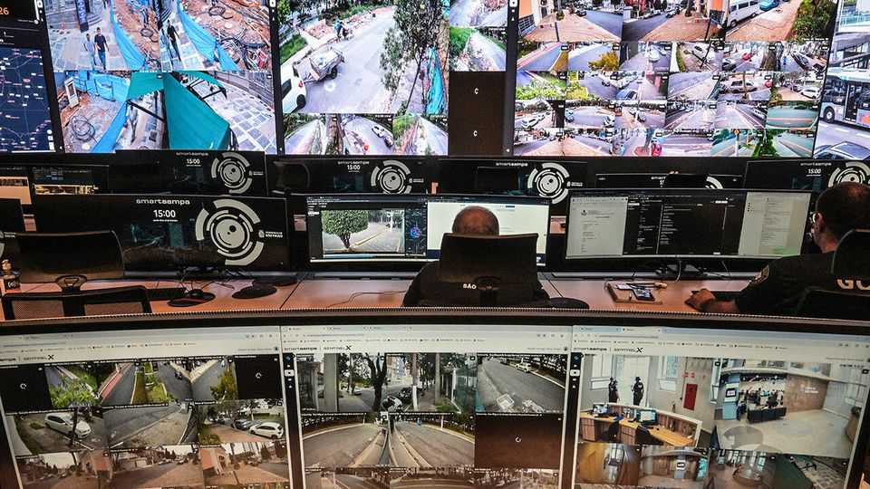

Brazilian cities are building vast surveillance networks
Can they combat the country’s biggest security threats?
July 9th 2026

In “Brazil”, Terry Gilliam’s film about a dystopian society, eyeball-shaped surveillance bots hover over citizens’ shoulders, watching their every move. In Brazil, the country, something a bit similar is afoot. That is evident in the heart of São Paulo’s historic centre, where a giant electronic counter known as the “prisonometer” records arrests attributed to Smart Sampa: a network of 50,000 cameras enhanced with clever tech.
The system, introduced in 2024, uses facial recognition to spot people wanted by police on São Paulo’s streets. It issues alerts and officers are dispatched to pick them up. The system can also locate people who have been reported missing, identify stolen vehicles and provide footage to police investigations. Streamed to its control room in the city centre, information flows not just from lenses on street corners but in health centres, on buses and mounted on police motorbikes. By 2028 the number of cameras in the network is supposed to double, to 100,000.

São Paulo is one of many Brazilian cities spending big on crime-fighting technology. As in other countries, police are investing in body-worn cameras and networks of microphones that detect the sound of gunshots. What sets Brazil apart from many democracies is its enthusiasm for face-spotting tech. Researchers for O Panóptico, a watchdog, count 560 active facial-recognition projects in more than 20 Brazilian states. These include police-run initiatives but also experiments in schools, for example, where cameras are increasingly being used to take attendance. They gaze upon some 99m people, more than 47% of Brazil’s population.
The main impetus for the likes of Smart Sampa is Brazilians’ persistent fear of crime. Policing is largely the responsibility of states and municipalities. Their governors and mayors are embracing high-tech kit as a way of showing they are cracking down on insecurity. The spread accelerated during the pandemic, when cities bought cameras to enforce lockdowns and track public-health measures. Many were later repurposed for public security.
It helps that high-resolution, internet-connected cameras are becoming cheaper—and that software capable of wringing insight from their footage is growing more effective. As well as governments, companies and individuals now deploy smart surveillance systems, says Erick Coser of Gabriel, a security-technology firm. Smart Sampa relies heavily on cameras put up by landlords, such as the firms that operate in São Paulo’s shopping centres or manage apartment and office buildings, who link their sensors into the system. Ricardo Nunes, the city’s mayor, says that already more than half the cameras in the network are privately owned.
The authorities paint these developments as a success. São Paulo’s government says more than 3,000 fugitives have been arrested after being spotted by its system, and that the cameras have let them catch nearly 6,000 people in the act of committing crimes. The use of facial recognition has won broad support across Brazil’s political spectrum, says Rafael Ch of Signum Global Advisors, a consultancy.
Yet privacy advocates and some security experts are alarmed. They question the effectiveness of the surveillance systems, and their fairness. São Paulo has been hauling people in on warrants later found to have expired or been withdrawn. A persistent worry is that face-spotting systems are not uniformly accurate when identifying people of different ethnicities. According to Agência Brasil, a state news agency, roughly 80% of wrongful arrests linked to facial-recognition systems in Rio de Janeiro involve black Brazilians. Though the country’s privacy and data-protection laws are some of the strongest in Latin America, public security gets big carve-outs. In other places that have invested heavily in surveillance technology, such as Britain, there are stricter legal safeguards.
Surveillance tech cannot make up for underlying failures in the criminal-justice system, says Pablo Nunes of the Centre for Security and Citizenship Studies (CESeC), a think-tank. Many crimes in Brazil are never properly investigated (only a third of murders are ever solved; in São Paulo state, police solve only around 2% of recorded thefts). Sensors that help pull wanted people off the street are no use in cases where no suspects have been identified.
Capturing more crimes on camera will surely be helpful. But police often lack the skills and resources to sift through reams of footage. The CESeC recently compared crime trends in São Paulo during Smart Sampa’s first year with those in other municipalities and found no reduction in thefts, robberies or homicides, nor any increase in police productivity as measured by the number of arrests.
Official claims about effectiveness also tend to ignore the fact that Brazil’s streets were growing safer before new crime-fighting technologies became widespread. Murders, robberies and thefts have fallen markedly since 2018. In São Paulo, robberies reached a 25-year low in 2025; its murder rate is now among the lowest of any large city in Latin America. One reason is that crime is changing: large organised crime groups are becoming less like street gangs and more like lawless conglomerates. They infiltrate legal markets, seize control of their supply chains and launder money through legitimate businesses. According to the Brazilian Forum of Public Security, a think-tank, gangs generated 147bn reais ($29bn) from fuel, gold, cigarettes and drinks in 2022, compared with only 15bn reais from trafficking cocaine. None of this is easy to capture with cameras, no matter how smart they may be.
All this raises questions about costs. Smart Sampa now requires at least 118m reais a year to run. The state of Rio de Janeiro has spent more than 670m reais on facial-recognition technologies for public security. The opportunity costs are highest in poorer parts of Brazil. In Goiás, a central state, lawmakers have splurged on whizzy security systems for towns where less than half of households have basic sanitation and violent crime is rare.
Courts are beginning to push back. But even if new rules are adopted, enforcing them will be hard, says Caitlin Bishop of Privacy International, a digital-rights group. “Officials often lack the technical expertise needed to verify rules are being respected.” Security will be an important issue in general elections in October. As the “prisonometer” shows, Brazilian politicians love eye-catching ways to look like they are tough on crime. ■
Sign up to El Boletín, our subscriber-only newsletter on Latin America, to understand the forces shaping a fascinating and complex region.